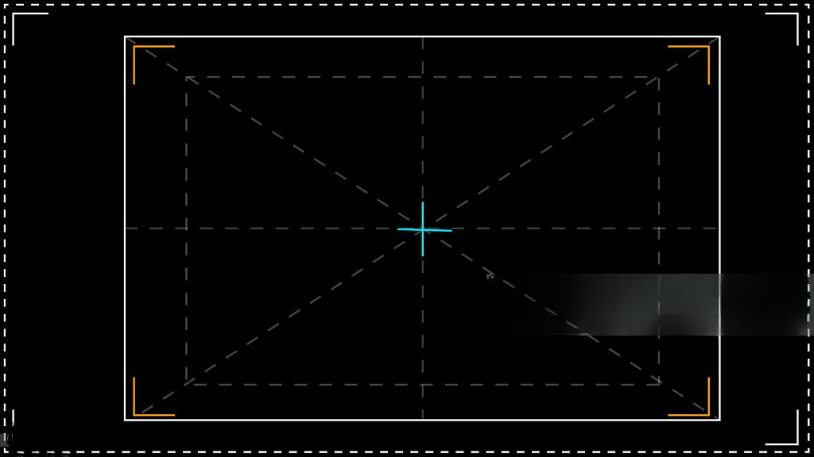
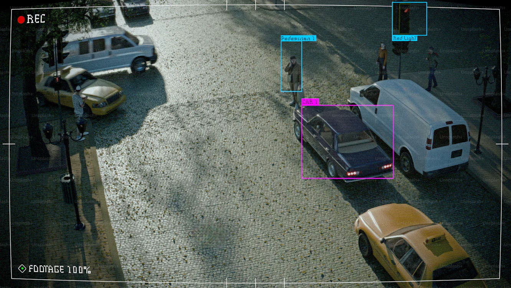
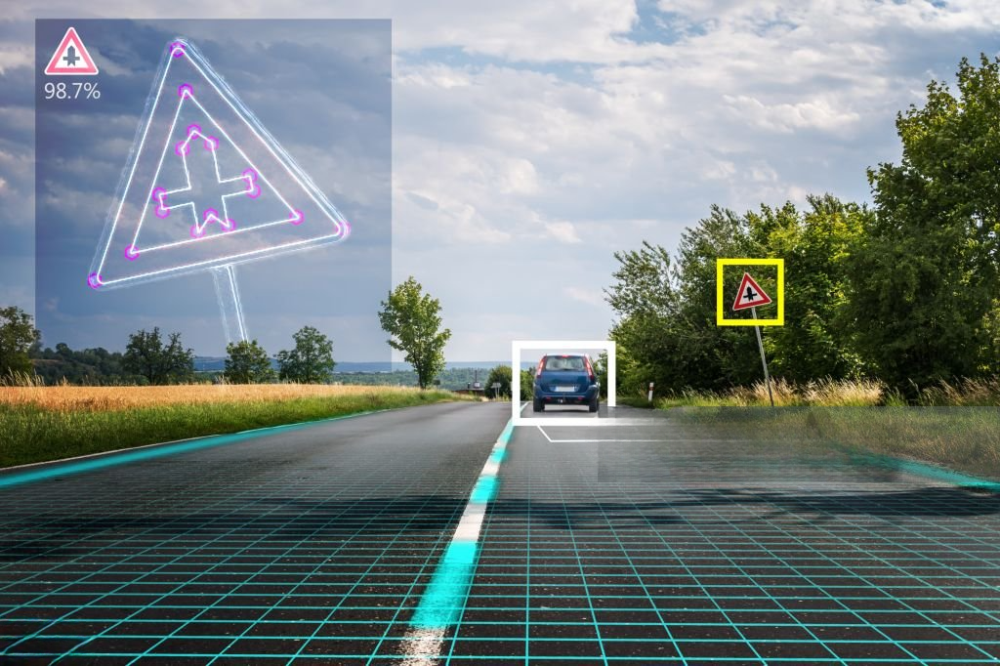

Turn raw video into high-quality training datasets with secure, scalable video annotation services that power accurate computer vision and AI models.
Annotalabs is a trusted provider of video annotation services, delivering high-accuracy video labeling solutions that power advanced AI and machine learning applications. We help organizations transform raw video footage into structured, high-quality training data, enabling computer vision models to accurately detect, track, classify, and understand objects, activities, and behaviors in real-world environments. With more than 20 years of outsourcing expertise and a secure global delivery model, Annotalabs offers scalable, cost-effective video data annotation services for industries including autonomous vehicles, healthcare, robotics, retail, smart surveillance, and security.
Our experienced annotation specialists create frame-by-frame labels using industry-leading techniques such as 2D bounding boxes, 3D cuboids, polygon annotation, keypoint annotation, landmark tagging, and multi-object tracking. Every project is supported by rigorous quality assurance processes and multi-layer validation to ensure consistent, accurate, and production-ready datasets. Whether training AI for object tracking, activity recognition, behavior analysis, scene understanding, pose estimation, or autonomous navigation, we deliver the precision required to improve model performance and reliability.
By converting complex video content into high-quality computer vision training data, Annotalabs helps AI teams accelerate development, reduce model errors, and scale machine learning initiatives with confidence. Our combination of skilled human annotators, proven workflows, and enterprise-grade quality controls ensures reliable video annotation at any volume, helping businesses bring AI-powered products to market faster.
Our annotation services support complex AI use cases and deliver frame-accurate annotations. As a result, training data becomes more refined for advanced machine learning and computer vision models.

Items are marked with rectangular outlines for quick and simple detection tasks. Moreover, this technique ensures faster model training with clear visual boundaries.

Object depth and orientation are added to improve autonomous navigation AI. As a result, models gain a better spatial understanding of real-world environments.
Irregular shapes are outlined with exceptional accuracy for advanced segmentation. In addition, this helps AI systems detect complex object contours effectively.
Facial or body points are labeled for pose detection and motion tracking. Therefore, applications in healthcare, robotics, and sports analytics become more precise.

Human expertise is combined with advanced tools to deliver secure and scalable video annotation services. Therefore, mission-critical AI training is effectively supported across multiple industries.
Key events are identified and labeled across video sequences for activity recognition. Moreover, this allows AI to detect and interpret human or object interactions.
Facial features are pinpointed for identity verification and emotion analysis. As a result, vision-based AI systems achieve higher accuracy in real-time applications.
Moving objects are categorized across frames for machine learning models. In addition, this ensures consistent labeling and better training efficiency.
We combine human expertise with advanced tools to deliver secure, scalable video annotation services that support mission-critical AI training across multiple industries.
Every frame is carefully annotated for precise object tracking. Moreover, our quality control process ensures consistency across even the most complex video sequences.
Workforce expands easily to meet large dataset demands. As a result, projects of any size are delivered efficiently without compromising accuracy.
SOC-compliant workflows are followed to safeguard sensitive video datasets end-to-end. In addition, strict access controls and monitoring maintain data integrity and client confidentiality.
We provide secure, affordable, and scalable video annotation outsourcing services backed by proven BPO expertise. Moreover, our industry-trained professionals ensure accuracy and reliability in every project.
With over 20 years in outsourcing, deep BPO experience is applied to every project. Moreover, proven processes ensure consistent quality and dependable delivery.
Cost-effective services are designed to help reduce project spend. As a result, clients achieve top-tier annotation quality while staying within budget.
Team of 1,500+ trained professionals delivers precision across all video annotation projects. In addition, continuous training ensures adaptability to evolving AI requirements.
Global teams operate round the clock to support time-critical AI initiatives. Therefore, projects move faster without compromising accuracy.
Custom workflows are developed for industries such as automotive, retail, healthcare, and security. Consequently, each dataset aligns perfectly with specific business and model goals.
Flexible workforce scales seamlessly to meet varying project demands. Furthermore, resource allocation is optimized to ensure efficiency and consistent quality across large-scale initiatives.
Here are answers to common questions about video annotation services and how Annotalabs supports enterprise-scale AI development projects.
Video annotation is the process of labeling video frames with metadata so AI models can recognize, classify, and track objects in motion. Moreover, it helps machine learning systems understand context and behavior across sequential frames. As a result, video annotation becomes essential for applications like autonomous driving, healthcare, and security. Therefore, it enables computer vision models to make accurate, real-time decisions.
Unlike static images, video provides temporal context. AI models need to understand how objects move and interact over time to function in real-world scenarios like self-driving cars or security cameras.
Common techniques include object tracking (maintaining ID across frames), bounding boxes, 3D cuboids for depth, semantic segmentation, and keypoint tracking for pose estimation.
Autonomous vehicles (dashcam data), security and surveillance (threat detection), sports analytics (player tracking), and robotics (manipulation tasks) are the heaviest users.
Video annotation is incredibly time-consuming. Annotalabs provides a scalable workforce of 1,500+ trained professionals who can handle massive video datasets with strict QA and fast turnaround times.